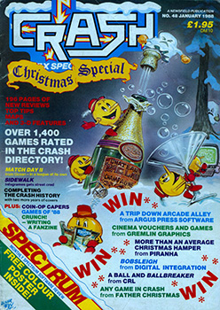
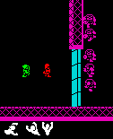
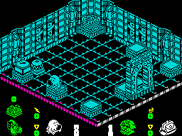
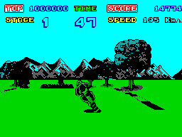
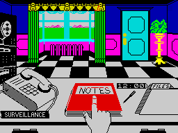
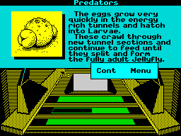
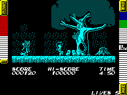
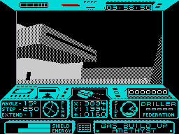

Lloyd Mangram LOOKS BACK At 1987
Taken From CRASH Issue No. 48, Christmas Special 1987/88
TRENDS noticeable in 1985 and 1986 continued not only unabated throughout 1987. but even accelerated: and most major software houses fronted with licences and conversions. There are some very good reasons why coin-op arcade games should find their way onto home micros - about the same sorts of reasons why good novels find their way onto the TV and cinema screen - but good reasons aren't enough alone; just as books can be ruined in their adaption, so can arcade originals in their conversion.
Licences are really much harder to defend, since the source is frequently unsuited to a computer game theme, and if it wasn't so often sad, it would be an amusing sport to watch frantic programmers desperately struggling to pick on something in 'their' film on which they might hang a reasonable game. During 1987 the commercial notion that a 'name', whether it be a famous person, incident, book or fictitious character, can sell a computer game, whether it be good, indifferent or poor, took a much firmer hold. It's a cynical notion, that reckons people are so gullible that because they adored Rombo Clone Wars starring Arnold Stalnegger at the cinema, they'll go out in their droves and buy the licensed game from Slipshodsoft without waiting to see whether it's any good or not.
Yet 1987 has seen at least one major software house come to terms with its reputation for unevenly implemented licences and tackle the problem in the only sensible way - place more stress on better game design, programming and, most importantly, better playtesting. A pointer to the future, and a hope, perhaps, that the more professional this industry becomes, the better the product may be, rather than poorer and less caring.
The other 8-bit trend, most noticeable with Spectrum software, has been the growth of budget labels and titles. Had CRASH opted for a 'budget review ghetto' a few months back, as had been internally suggested, then today there would be few pages of reviews! No-one has quite agreed yet whether the burgeoning budget is a Good Thing or a Bad One. On the whole the quality of budget releases is still universally poor when you consider how many there are, and despite the notable exceptions Mastertronic (in its various guises) and Code Masters have given us occasionally.
The saving grace has been the sheer size of the 8-bit market. Software houses don't yet seem prepared to let full-price games slip away, and ironic as it may be, the advent of a 16-bit market with competitively priced machines like the Atari ST providing a real alternative for upgrading, is likely to force companies to produce even better Spectrum and CBM64 games to maintain the 8-bit sales.
Bearing all this in mind, lets take a trip down cliche lane and rip through some of the good times and some of the bad of 1987...
January
AFTER a prestigious launch with The Art Studio and some complex music utilities, British Telecom's Rainbird label had remained quiescent on the Spectrum, now it kicked off the New Year with two Smashes, Starglider and Jewels Of Darkness. The 48K Starglider was hailed as amongst the best games to grace the Spectrum, but it was the 128K version that kept the office minions working after hours, and rated at 97%, it was one of the highest Smashes ever. Written by Realtime Software (3-D Tank Duel, Starstrike), it featured incredibly fast 3-D vector graphics, an assortment of enemies to kill as well numerous missions to be undertaken, Rainbird gave it the VIP treatment from its lavish packaging to a 64-page novelette which gave clues as to how the game should be played.
Later in the year the Atari ST version featured on the TV programme Get Fresh. So impressive was Starglider that since then it has reversed natural trends to be converted into an arcade machine. It has been Rainbird's only arcade game to date, but the company has become noted for its adventures. They took over veterans Level 9 Computing and Jewels Of Darkness was a compilation of three of Level 9's early hits, Colossal Adventure, Adventure Quest and Dungeon Adventure. Each game was revamped with improved text and the addition of graphics. Once again Rainbird packaged it lavishly with a short novella by Peter McBride. The compilation was highly recommended by Derek.
The undead were dragged into the Spectrum's 3-D isometric sphere with Nosferatu, licensed from the silent Twenties film of the same name. Pitting the player against the dastardly demon vampire, Nosferatu consisted of three main stages, the middle one of which had the player controlling three characters! The game was an instant Smash with reviewers, which was nice for Design Design who wrote it, and for Macmillan's fledgling label, Piranha, who marketed it.
Piranha's second release of the month, Rogue Trooper, again programmed by Design Design, and based on the comic-book hero made famous in 2000 AD, wasn't received with quite the same enthusiasm as Nosferatu. Comments ranged from 'too boring' to 'I could play this game for hours', but one aspect all the reviewers agreed on was that it was just too easy to play.
Other licensed games of the month included Marble Madness, Tarzan and Space Harrier. Marble Madness clones had been floating around for months, many failing to impress. Melbourne House tried topping the lot by releasing the Marble Madness Construction Set. The inclusion of a screen designer did little to push its ratings up and many felt it was a poor effort when compared with Gyroscope, a previous variant on the same theme also by Melbourne House.
Martech's Tarzan had you hurtling through the jungle in a loin cloth in a bid to rescue your beloved Jane from the hands of the Usanga tribe. We recognised that it contained some pretty pictures but at 73% overall the game was nothing special. Neither was Elite's anxiously awaited conversion of the arcade hit Space Harrier, which projected the Midlands company into the New Year on a continuing spate of licensed arcade games. In truth most aspects of Space Harrier were reasonable, but it wasn't ideally suited to the Spectrum, and without the original's moving cabinet, the game seemed to lose something and came out with a score of 77%.
The Edge started 1987 with Fairlight II: Trail Of Darkness, sequel to the 1985 Smash Fairlight. What seemed destined to be a hit failed to live up to our expectations, falling short of a Smash with 81%. Author Bo Jangeborg was praised for the the highly detailed two-colour graphics, but was criticised for the game's slowness and the extreme similarity that it bore to Fairlight. Just going to show that graphics maketh not a game.
January also saw Microsphere's first release for quite some time. Could they keep up the standard set by earlier hits such as Skool Daze and Back To Skool? Contact Sam Cruise certainly did nothing to harm Microsphere's image as a producer of original, high quality software. A Smash with 93%, Contact Sam Cruise written by Dave Reidy, was credited with having a Raymond Chandler flavour about it, as the player roamed the city streets trying to solve a case while avoiding gangland heavies partial to a bit of bashing.
Pete Cooke scored his first hit of the year for CRL with Academy, the long awaited sequel to Tau Ceti. Following in the same vein as its predecessor, Academy set tasks of varying difficulty for the player to overcome. The game also included an option to define your own skimmer, but as weight had to be taken into consideration it was impossible to equip yourself as an indestructable super fortress. Described as 'amazingly good', Academy was Smashed at 92%. Pete Cooke's programming abilities seemed to have improved with his last few games, and as it turned out, Academy was not to be his last hit in 1987.
February
February deluged the Towers under an avalanche of software - obviously lots of Christmas releases that had just missed the seasonal deadline. It seemed to be the month of the tie-in with Gauntlet and Top Gun topping the bill. Incidentally a third of February's releases came from either US Gold, Imagine or Ocean. It was also the first time in CRASH history that the ratings system was overhauled to bring it more in line with the times. From February forth the reviewers' comments would be credited with their names.

After months of clones and poor imitations the official US Gold conversion of Gauntlet arrived, and blasted away the competition. Smashed with an overall of 92%, Gauntlet was a great game and one not to be missed. To accommodate the original's great size the programmers had elected to use a multiload system to expand the game's potential - not the first time a Smashed game had used this system and certainly not the last. Nevertheless even with this system the graphics were not very impressive. Where Gauntlet differed from many of its imitators was with its simultaneous two-player option, not quite as much fun as the four-player original but nevertheless a vast improvement on the one-player, antisocial clones and a huge saving in 10ps.
Electric Dreams's first release of the year was a licensed game based on the scary movie Aliens. The player controlled Ripley, four space marines and an android as they entered the Alien Queen's egg-laying chamber to kill her. The graphics were neat and it certainly had atmosphere, but thankfully the game wasn't as gory as the film. We had no real complaints but just felt that it wasn't quite good enough to warrant a Smash.
Ocean fared a touch better with their film licence, the fine aerial dogfight simulator Top Gun, which tested the player's flying abilities to the hilt. Although it lacked Tom Cruise, and while the graphics were simplistic vector affairs, the game made up for these shortcomings in its gameplay. The player chased the computer's plane through the heavens, trying to gun it down before it got you. If this became boring then a two-player option allowed for head-to-head combat with your best friend. Yet another hit game which proved that playing computer games isn't necessarily antisocial.
Eccentric tie-in of the month awards went to The Archers and Donkey Kong. The Archers was released by Mosaic, but it was the skilful programming by the bunch at Level 9 that turned what was potentially a very dull game into an enjoyable experience. The object was actually to keep up the long-running radio show's audience ratings. As with Adrian Mole, also released by Mosaic, you didn't have to input replies but were given a number of options to choose from. Strangely, although its overall rating was 90% it wasn't a Smash, probably an oversight between editorial and art, rather than Derek's intention.
Ocean's Donkey Kong was an oddity because they had released Kong some years previously. In those dim and distant days people didn't seem to bother, so much with the proprieties of licensing so perhaps Ocean thought it was time to redress the balance and do it properly. In the event, this version was licensed from the Nintendo arcade machine, and while the reviewing minions thought it a good conversion, they also felt that it was just a few years too late.
Speaking of Ocean, February saw them releasing Highlander, another game based, although loosely, on a film. Programmed by Canvas (the splinter from Denton Designs), it centred on only one aspect of the film, the fight sequences. You played the part of Mcleod set against three opponents, Ramirez (very strange as he was MeLeod's friend in the film), Fizir and Kurgen (the mighties of the bunch), and each character had to be loaded separately. On the whole it was a disappointing product that bore little resemblance to events in the excellent and quirky film.
Imagine released a real clutch of games including Yie Ar Kung Fu II, Super Soccer and Konami's Golf. Probably best of the bunch was Terra Cresta, yet another coin-op conversion. This shoot-em-up with its vertically scrolling format bore a striking resemblance to that old arcade favourite, Xevious, the Spectrum conversion of which US Gold also released in the same month but it got a lower rating. Graphically Terra Cresta was nothing special, but shoot-em-ups can always be great fun and this was no exception. Given an 81% rating, it was felt to be just a touch too expensive, considering what you got.
Torus, the programmers of Gyron and the Spectrum version of Elite unveiled their third game, Hive on the Firebird Gold label. Set on the insect-populated planet of Gamma V, the player penetrated the hive's complex defences to eliminate the Queen at the centre of a network of tunnels, and needed to find a laser and other assorted goodies such as key cards to gain admittance into areas sited about the tunnels. We were divided in our opinions of the latest Torus game. Some thought it looked impressive but lacked enough real excitement to make it brilliant, while Ben felt that the game would become a cult. I guess Ben's prophetic powers aren't fully developed yet...
Impossaball narrowly missed out on Smash status by receiving 89%. Written by newcomer to the Spectrum John Philips and marketed by Hewson, it had the player guiding a bouncing ball down eight progressively harder corridors. The scrolling of the graphics was excellent, and in general the whole package was very polished, but it just lacked that little something that turns a good game into a Smash.
Then spring arrived...
March
AFTER flushed February mordant March was most notable for its absence of good software. Perhaps the spring hadn't quite sprung then...
Most games released hovered around the sixties mark with Feud and Ranararna standing head and shoulders above the rest.
The major event of the month was the take over of veteran Melbourne House by budget software giants Mastertronic for a claimed seven-figure sum. Both software houses still published under their own names with Melbourne House occupying the full-price range and Mastertronic concentrating its labels on the budget market.
In a doubtful attempt to prove they were still in operation, Melbourne House finally released Judge Dredd. Based on one of comics' most famous cult characters from 2000 AD, it was always going to be a risky licence in the eyes of Dredd fans, and perhaps Melbourne House took it in entirely the wrong direction. It was basically a platform game with the player jumping around the screen shooting perpetrators (perps to the cognoscenti) who threatened Mega City One. Judge Dredd was inevitably a great disappointment to CRASH Towers, especially after waiting so long for it. The comic stories provided plenty of scope for a game but Melbourne House failed to implement any elements that made the strip a hit.
Perhaps we could be kinder to Melbourne House's second March release? Fist II, sequel to The Way of the Exploding Fist, set you the task of finding a temple, entering it thus making you invincible, and overthrowing the evil Warlord who ruled your land with terror. Sadly, we couldn't. Expectations ran high but the game didn't quite deliver the goods. Despit ethe 16 fight moves available, the action in between fight sequences was dull, and it gave the impression of being very mundane.
Programmed by Binary Design and released by Mastertronic's Bulldog Software label, Feud was one of the highspots of the month. Playing the part of one of two feuding medieval brothers, the object was to run around the playing area collecting ingredients to mix spells and potions which created havoc for your sibling. Feud was the first Bulldog release, and further showed how Budget games were coming of age. At £1.99 the game provided excellent value for money, with large, well animated graphics and the real bonus of gameplay which really kept the player on his toes.
Greyfell was the first release for another new games label, Starlight Software. An evil wizard had brought misery to the forced perspective world of Greyfell, and only by stomping on meanies to kill them, and by collecting useful objects, did you have a chance of ridding the land of the wizard's baleful influence. Greyfell was well presented but its gameplay left a lot to be desired.
After eons of waiting Activision's The Little Computer People (LCPs) finally emerged from our Spectrums, although it transpired that only 128K machines were big enough for them to inhabit, You remember the story; not so much a game more a way of life, the package supposed that Pet People were little beings who lived inside your (128K) computer, and you were responsible for feeding and keeping them happy. Each pet had its own personality and preferences, and simple keyboard instructions could request the pet to do things such as play records, take a bath or play a game with you on its (128K) computer.
But it had taken too long in coming out on the Spectrum and excitement created initially by the CBM 64 disk version had worn off. Novel it may have been, but the Spectrum's limitations imposed on the program made it less flexible, and in truth it was a touch tedious.
Ever one for turning principles into frogs, Steve Turner took the Gauntlet theme a step further for Hewson with Ranarama. Much in the same vein as the original, Ranarama expanded on the idea and improved it a great deal. Turner, author of Dragontorc and Quazatron among others, cast the player as Mervyn, a failed sorcerer's apprentice who, by a series of miscast spells, ends up in amphibian form. The castle has been overrun by evil wariocks and other assorted unpleasantries and Mervyn must save the day by annihilating them, and restoring himself to human form in the process. Its presentation differed from Gauntlet, fitting more than one room on screen at a time, and while the graphics were good the animation tended to get a bit messy at times. But once again it was the highly addictive gameplay that made this game a Smash for Hewson.
On the down side, Brian Clough's Football Fortunes, which had featured on the Christmas Special cover, enjoyed less favour than fortune, with 42% for CDS, occasioning comments typical of many hybrid board/computer games reviews before it - it seemed the software side had been neglected.
US Gold's Masters Of The Universe licence hit rock bottom, while Leisure Genius fared only slightly better with the licence they had been working on for well over a year, Scalextric. Electric Dreams, too, seemed to be a software house in search of success after its pre-Christmas launch; Explorer, the game boasting a ludicrous 40 billion mappable screens. and Tempest, the wire-frame shoot-em-up from the arcades, failed to impress deeply.
Fortunately there was a highlight though, and undoubtedly the event of the month was an interview with Bernie Drummond and Jon Ritman, the men behind the hit game Batman, which gave the reviewing team their first glance at Head Over Heels but more of that in a moment.
April
THE April issue of CRASH saw some spring-cleaning at the Towers. Founding editor and all-round slave-driver Roger Kean was taken off the mantlepiece, given a good dusting and reinstated at the helm while Graeme Kidd departed with the wintry weather for the editorship of trendy magazine LM. Hannah Smith departed from the Playing Tips for the sweet smell of pastures new, and a newcomer to these hallowed pages was Richard Eddy, who made the transition from AMTIX! to CRASH reviewer with the minimum amount of fuss besides the odd cry of 'bwah, monster' and his driller killer laugh.
US Gold's CBM 64 hit Leader Board finally made it on a Spectrum green. It took us all hours of persuasion to dissuade Roger Kean from donning his flat cap and awful houndstooth-check plus-fours and giving it a bash. Leader Board was the very best golfing simulation we had seen. Featuring a four-player option, budding golfers could play on any of four 18-hole courses with three levels of play. Notorious for their boredom factor, reviewers don't look forward to golfing simulations, but Leader Board surpassed all past expectations, and although a bit slow to play at the start, perseverance resulted in an enjoyable game which got 80%.

A strong contender for game of the year was Head Over Heels released by Ocean and written by the duo Ritman and Drummond. It had the reviewers raving.
Set in a far away galaxy, four planets ruled by the tyrannical Emperor (from the planet Blacktooth) are in turmoil. Two spies from the planet Freedom have been sent to provoke revolution and recover the lost crowns from the slave planets. Head Over Heels utilised the isometric forced perspective now a commonplace. It led to an immediate comparison with the earlier Batman as well, but Ritman and Drummond injected much into the stale format. For a start the spies Head and Heels, separated at the start, had different abilities, and were controlled as separate units or could be united to perform tasks that each alone could not. Added to this novel approach were the many puzzles, collection of objects whose purposes were not immediately apparent, and the marvellous arcade action. Head Over Heels more than adequately proved that good computer games do not depend merely on appearances but on game design as well, and it certainly deserved its rare accolade, a Smash at 97%.
Breakout games enjoyed a comeback, and Imagine's Arkanoid received an overall score of 59%.
This souped-up version of the ancient hit, despite some odd programming which made some of its idiosyncracies a bit hard to handle, proved to be thoroughly addictive. After five years the game hadn't made any major improvements on the ohginal, but just went to show that some games never die, they simply get rewritten. The review led to a battle when many readers, horrified at the low rating, attacked in the Forum, a fight which was to hot up in the following month when Gremlin Graphics' version, Krakout, received a higher percentage.
Breakout was not the only golden oldie to be rewritten this month with the advent of Classic Muncher from Bubble Bus, a variant on the well worn Pacman theme. Consisting of six infinitely repeating screens, Classic Muncher played exactly like its inspiration, and while bringing back flashes of nostalgia, it did little to impress, scoring a miserable 41%.
Telecomsoft's first Smash of the year came in the form of Firebird Silver's I, Ball. At £1.99 it provided astounding value for money, and after some tediously sub-average product, showed that Firebird still had it in them to produce an excellent low-cost game and give Mastertronic a run for their budgets. Most notable was the excellent digitised speech, best heard through some sort of amplifier as the Spectrum's own inbuilt buzzer wasn't really up to it. The gameplay was terrific and it had us all addicted within a short time.
If addiction be the food of love, then indigestion is much the same as repeating things - we had Elite's Bombjack II which didn't do too badly at 71% but failed to satisfy as much as its predecessor had done, there was The Growing Pains Of Adrian Mole from Mosaic (but marketed by Virgin Games this time round), which did almost as well as its ancestor at 88%, and there was Software Projects, striking back with Escape From Singe's Castle: Dragon's Lair II, which also did pretty well with 83%. In each case the game was more than reasonable, but the surfeit may have caused the reviewers to sicken. It looked like it was time for May...
May
May's edition of CRASH was a bit fat as spring/summer issues go due to the inclusion of a giant 32-page Playing Tips bonanza lovingly complied by yours truly over many sleepless nights. Past years had always seen the so-called summer slump, but May managed to produce a remarkably good crop of games from a surprisingly large selection, including the latest releases from both Firebird and Ultimate.

Over 24 months Activision had not found much success with its Spectrum games but with the advent of Enduro Racer they set the record straight. Licensed from the arcade machine of the same name and programmed by Giga Games, it followed the original closely. The object of this bike race game was very simple - outrace the other bikers and complete each course in the quickest time possible. Each course contained different backdrops with logs, rocks and opponent racers acting as obstacles. Race games have always been firm favourites with the public and each year they improve in ingenuity, Enduro Racer lodged its way firmly amongst the greats of this type.
After Silver, it was Gold's turn; following hot on the heels of the budget I, Ball, Firebird secured themselves a second Smash in as many months. Costly at £9.95, The Sentinel still provided wonderful value for money. Once again we had a game that had been a huge hit on the CBM 64, and had then taken an age to appear on the Spectrum, but the implementation was finely tuned. The daunting task of rescuing 10000 planets from the Sentinel and its Sentries through a process of power absorption, offered the player a game of thoughtful, chess-like strategy - where much consideration had to go into each move to ensure success - and sometimes furious activity. Its originality and the sheer depth of play made it a winner.
Martianoids was Ultimate's first release of the year - and for some time. A 3-D forced perspective game, it cast the player in a defensive role with lasers for protection against marauding Martianoid machines. The tide had been slowly turning against Ultimate over a period, and Martianoids was criticised for below-standard graphics and poor gameplay, receiving only 58%. And it wasn't the only disappointment in May; World Games from US Gold/Epyx didn't quite live up to expectations either. Like Winter Games it was divided into several events with the player having to wait what seemed an eternity for individual events to load. Its graphics didn't impress as much as had its predecessor's, but it was otherwise an adequate sports simulation.
Indigestion was narrowly avoided by Gremlin Graphics when they released Auf Wiedersehen Monty, latest in the long line of Monty Mole games which had started back in 84 with Wanted: Monty Mole. Written by Monty's creator, Peter Harrap it followed his usual style of game, a complex platformer with devious traps and neat graphics and sound. It also sparked off a controversy within the reviewing ranks between those who were bored stiff of Monty, and those who still reckoned a game could be good despite its formulaic convention. The latter won out and Auf Wiedersehen Monty got 85% as Monty trekked across Europe to buy himself a nice Greek island so that he could be safe from the prying attentions of Intermole, the international crime fighting organisation. But in that missing five percent that would have made it a Smash like the previous Harrap 'Monty' games, perhaps there was a buried message that the formula was risking staleness.
Ocean hoped to give everyone a pleasant shock with Short Circuit, based somewhat loosely on the movie. It contained two distinct games, an arcade-adventure and a chase sequence. The arcade-adventure saw the hero-robot Number Five searching offices for extra parts and a means of escape, while the chase sequence, staged on a horizontally scrolling background, had him attempting to reach a van at the end of the track and escape to further adventures. Unfortunately the shock was more of a tingle, for despite the above-average graphics, the game suffered from tie-in-itis, a failure to pinpoint the film's best aspects.
In a bygone age Gilsoft released the marvellous Quill, a machine code utility which acted as a writing system for those who wanted to create adventures but couldn't program. Later they gave us the Quill Illustrator, and between them they supplied many a good game but were equally responsible for an influx of many bad ones. In 1987 Gilsoft excelled themselves and achieved a Smash with The Professional Adventure Writer, or PAW as it became known. A continuation of adventure writing systems, PAW was extremely well documented, making it much easier to use than existing systems. As with many adventure writers, graphics could be drawn, but PAW really came into its own with its handling of vocabulary. Derek Brewster gave it 97% - and made it must for hopeful adventure programmers.
Reeling from the shock of a Firebird budget Smash the month before, Mastertronic hit back through their M.A.D. label with the peculiarly named Amaurote - and they got a Smash too. In Amaurote you freed sectors of a city from invading insect armies, destroying the Queen before she could produce more insect warriors and overwhelm you. Binary Design's highly original monochromatic graphics made it look stunning. It was both playable and addictive and, in 128K mode, boasted extraordinarily atmospheric music which Ben Stone kept playing until we all felt like lasering him into oblivion.
For two years Mike Singleton had held Derek Brewster in his 'Land Of Midnight' thrall. Now he reappeared somewhat outside the adventure area with Throne Of Fire for Melbourne House. Though in fact he hadn't programmed it, Mike played an important part in the game and graphics design. Throne Of Fire - three brothers battled for the throne of power with the player taking on the part of one of the brothers and the computer controlling the others - used a split-screen format similar to that of Spy vs Spy. It looked very good, but we felt it was a bit too easy to be really satisfying, although the game scored through an option for two players to take on a brother each while the computer played the remaining brother.
June
TALK OF THE DEVIL, having just mentioned it, in June Spy vs Spy II popped up. Beyond's prequel had been a Smash some years before. The follow up, titled Island Caper and released through Databyte, saw the familiar black spy and white spy running around a tropical island searching for parts of a missile, using the Trapulator to lay devious traps as the means to exterminate each other. Oddly, the monochromatic presentation of the earlier game was dropped in favour of colour - too much in fact, and ugly attribute problems gave it a rather garish appearance. This wasn't really progress, with slow, jerky scrolling letting down a reasonably playable game, and reducing it to only 53%.
You didn't have to be on a tropical island to enjoy the heat - this a was sunny June for a change, and there were 37 games in review! Could this really be summer? I can remember past Junes when we were lucky to scrape 15 games together. Mind you, a lot of the titles were budgets. No, we lacked not for games, but the Smashes were few.
Luckily Hydrofool from FTL, the Gargoyle Games label, gave us something to rave about - and kept us cool, for the sequel to the acclaimed Sweevo's World had Sweevo on a new mission this time under water, cleaning out the filthy world known as Deathbowl. The famous Gargoyle sense of humour clearly emerged in Sweevo's task, pulling out each of the four plugs that held the water in, as assorted nasties tried anything to get rid of him. Stunning 3-D isometric graphics set on several levels, amusing animation and devious puzzles made it a hit, but Hydrofool was very derivative of Sweevo's World, and more likely to appeal, it was felt, to fans of the previous game.
In quick succession Ultimate slipped out another release in a marble vein of madness - Bubbler. It was an improvement on Martianoids, though not by sufficiently large a margin to improve their flavour to full. The planet Irkon, under the sway of the evil wizard Vadra, could be saved by corking magical bottles that controlled his power. Once again Ultimate chose to use monochromatic 3-D graphics with smooth screen scrolling. Inertial effects coupled with the awkward control method made movement along the walk-ways difficult. Presentation may have been fine but gameplay was lacking, and mixed feelings amongst the reviewers, led to an overall rating of 78%.
Not one to be outdone, June saw Derek Brewster following the Playing Tips supplement with his very own Adventure extravaganza. Rainbird finally released a Spectrum version of The Pawn, an acclaimed Atari ST hit. Sadly it came minus the pretty graphics but still enjoyed Derek's approval at 90%.
Melbourne House managed to top this, however, with Shadows of Mordor, follow up to The Lord Of The Rings. Following the further adventures of Frodo and Sam in The Two Towers, it left the player to choose which character to play. Shadows Of Mordor retained the use of Inglish (the vocabulary system which made The Hobbit such a big hit), but only 128K Spectrums had enough memory for the graphics to be displayed.
Durell were also in full sequel mode and chasing another Smash with Saboteur II (or should it have been called Sister Of Saboteur?). With the hero of Saboteur dead, it was his sister who took up the central role in a bid to stop the Dictator from using his hi-tech missile systems, while android warriors were out to stop the avenging angeline. There were improvements, but in style of play and graphical presentation it followed the first game very closely. These similarities resulted in a rating of 83%. Had a little more originality been used it might have made it to Smash status.
Elsewhere the software front was dismal. Ocean's Army Moves looked good but odd collision detection made it frustrating, Hewson slipped up with Gunrunner, a scrolling shoot-em-up with a stale format, Quicksilva's wire-frame Red Scorpion was a poor Battlezone rehash that left everyone wondering whether the once-great software label would ever find a game of merit again. Even quirky Piranha disappointed with Mr Weems, while Mario Bros from Ocean was hardly the coin-op/games console conversion we were hoping for, and most ludicrous licence (probably) of the year to date came from Activision in the quacky shape of Howard The Duck - and it was out for a duck as well.
At the very last moment Barbarian dashed to the rescue. Palace Software not only caused controversy with their adverts, but the review of the game didn't go down too well in some quarters. Simple enough in theme, it was a savage beat-em-up with swords in a gladiatorial arena, but the first-rate practice mode and two-player option (on the cassette's B-side) together with fine monochromatic animation, made Barbarian one of the best fight games to emerge for a long while. Not quite a Smash, but very nearly.
July
NOW the 'summer slump' really started - it seems to get later every year - and not only did the number of games decrease but there was also a distinct lack of quality software, only Zynaps and Killed Until Dead saved the day.

Recovering from the uninspiring Gunrunner, Hewson's next shoot-'em-up (an old-fashioned genre which had hardly ever been in their repertoire) saw a change of pace, ideas and presentation. Zynaps was a classy, high-speed, horizontally scrolling game, just about the ultimate in Nemesis clones in fact. Additional weaponry could be collected, improving your chances against the aliens but, basically you were own. With code by Dominic Robinson and snazzy graphics by Steve Crow looking like colourful, smooth-moving works of art, this shoot-em-up was a joy to play. Zynaps served to relieve the boredom of a software-starved month.
The big surprise, however, was Killed Until Dead - a surprise because although the reviewing began early enough, no-one noticed how much this quiet game affected everyone else... but more of that below.
Before the month descended entirely into a slough of despond, we had Stormbringer on M.A.D., latest in the long line of Mastertronic's 'Magic Knight' games. Having returned from Knight Tyme the hero had split into two personalities: one good and the other decidedly off colour. In merging the two egos you restored White Knight to his former glory. Programmed as usual by David Jones, it followed the same format of the previous Magic Knight games in collecting objects and grouping them together to solve the numerous problems. And although it lived up to expectations already set with colourful, detailed graphics and devious puzzles, we were split over it; two reviewers reckoned it an excellent buy at £2.99, the other pointed out that it added little to the well-worn formula. The result averaged out at 86%.
And then there was Thing Bounces Back - a sequel without a Spectrum predecessor. Gremlin Graphics's Thing On A Spring had been a big CBM 64 hit with its uniquely cute boinging character in battle against wicked toys in the evil Goblin's toy factory. In the unprecedented sequel Thing attempted to stop the flow of evil playthings by collecting components of a computer. The toy factory was an industrial complex of platforms and pipes which provided a game on par with the Monty Mole series, but disappointing documentation and awkward controls let it down considerably.
In the same month Gremlin released, at the slightly lower price of £4.99, Alien Evolution. A 3-D scrolling game with more than a passing resemblance to the ancient hit Ant Attack (reviewed in Issue One), it had the player ridding the planet's surface of invading aliens. Though very derivative, it remained playable and reasonably addictive, but the passage of time elapsed since Ant Attack lowered its rating to 75%.
The MicroProse association with American Origin Systems, noted for their accurate attack-flight simulations and software personality boss, ace fighter pilot Wild Bill Stealey, finally resulted in the Spectrum release of F-15 Strike Eagle. Flight sims rarely look their best on the Spectrum, but this one contained as many thrills and spills as could be expected. and scored 84%.
As for the rest - well July is probably better forgotten except for...
Killed Until Dead. So there we were, sitting at the back end of the schedule, putting the last of the reviews together, when suddenly Paul Sumner noted that he'd given it 93%. Roger Kean looked at the other comments already in and let fly with a gasp! A Smash had crept up on us! US Gold's detective game was set firmly in favourite sleuthing land, a closed environment with only fellow amateur sleuths as the victims, murderers and hunters. At the Gargoyle Hotel all the worlds greatest mystery writers had assembled for a reunion but one is a murderer and another the intended victim. Your task was to solve the mystery before the event could actually take place. Killed Until Dead was an enjoyable and involving mixture of intrigue and action in a race against time, topped off by atmospheric graphics and compelling gameplay - it illuminated gloomy July.
August
NOT CONTENT with resting on their recently regained laurels, Hewson followed up July's Smash with yet another all-blasting shoot-em-up called Exolon. The theme was hardly new - mercenary is hired to rid a world of numerous beasties and unfriendly military installations using a powerful laser system and grenades for the more stubborn obstacles. But Exolon's main assets lay in its very large, brightly coloured and highly detailed graphics and the smooth animation of its central character. And the gameplay was all you would expect from a lavishly presented piece of action software. The 125 screens also showed that there was more to Exolon than just pretty graphics.

It has always seemed strange to me that no-one had picked up Flash Gordon to turn him from celluloid hero to a pixellated one, but M.A.D. finally did it and obliged with the game. Sadly the result aped some of those features which are nostalgically regarded today with fondness in the films but which don't look so endearing in a computer game - such as a poor plot and dreadful effects. Divided into three sub-games, Flash dashed through jungles, beat up cave dwellers and showed off his prowess as a motorbike rider. The graphics were quite dreadful, and as one reviewer remarked, Flash looked somewhat like a deep-sea diver. A disappointing game that held few surprises in store for the player.
After many rumoured launches and subsequent delays, Ocean scored a Smash with the 128K version of a game based on James Clavell's best-selling novel Tai-Pan. Central to the plot was trader Dirk Struan who wanted little out of life other than a vast fortune and to be boss of a trading empire - its Tai-Pan. It was, not unsurprisingly, a trading game where you started with a £300,000 loan to be paid back within three months. Trading games have a long and sometimes respectable Spectrum history, but they're usually let down by repetition. Tai-Pan's action couldn't be described as high speed but the wealth of things to undertake, such as purchasing and crewing ships, risk taking and avoiding the depredations of pirates on the high seas, made it one of the most enjoyable games of the month.
Derek's adventure Smash for the month marked a return to form of Macmillan's software arm Piranha. The Big Sleaze was written by Fergus McNeill and it was a different approach for the writer renowned for his hilarious parodies of better known works such as The Lord Of The Rings (Bored Of The Rings). Cast as film noir private detective Sam Spillade you had to solve various cases that fell into your tawdry office. As with Fergus' earlier hits it was the wit and humour perforating the text that made Derek give The Big Sleaze 93%.
Veteran Smashers Realtime Software released Starfox, their second game of the year, this time marketed by Ariolasoft offshoot Reaktör. Piloting the mighty craft Starfox, the player had to save the universe yet again from marauding aliens. It had many of the good points that made Code Name Mat and Elite such classics, and it deviated slightly from Realtime's shoot-em-up format. Planets had to be located, mother ships docked with, enemies destroyed and numerous other tasks had to be carried out. A combination of filled-in graphics and vectors were used to represent the enemy ships. While both Mike and Robin thought it highly impressive, Ben was not so convinced. He labelled it 'unplayable' and brought the overall rating down to 77%.
US Gold's Road Runner, a conversion from the arcade game which was, in turn, based on the cartoon, failed to convince everyone. The game design wasn't entirely satisfactory - Road Runner hurtled along roads collecting seed chased by the infamous Wile E Coyote, while trucks, crevasses, boulders and exploding mines all barred his path to long life. Through a multiload system, US Gold tried to capture the cartoon's atmosphere with garish multicoloured graphics, but this led to the dreaded attribute problem rearing its ugly head once again, and together with complaints about the awkward character control led to an overall rating of 73%.
The other big licence was Domark's second attempt at a James Bond film, The Living Daylights. It was divided into several levels following the main action scenes from the film. In the game this took the form of several similar scrolling sectors where you killed baddies. The only thing that seemed to change were the sector backgrounds, giving an all round sense of disappointment. Poor on-screen presentation and slack game planning let down what was potentially a fine game.

As a refreshing change from coin-op conversions and tie-ins, Pete Cooke released his second hit of the year. Micronaut One represented two changes in direction for Pete, he had moved from CRL to Nexus, and after two Tau Ceti games, abandoned the formula to do a very fast wireframe 3-D tunnel game. At that, it might have been quite ordinary, but the underground network of tunnels were infested by an insect form with three distinct biological stages to their lives which added interest to the game. And of course there was the by now accepted intricacies of Pete's front end with multiple options, plus a racing game to improve the player's steering abilities. Rated at 92%, it reaffirmed Pete Cooke's position as a top programmer.
A pity as much couldn't be said for most other programs reviewed in the issue. Ariolasoft's licensed Challenge Of The Gobots palled very quickly, Ocean's attractive looking Mutants turned out to be unaddictive, Reaktör had three disappointng sisters in Killer Ring, Deadringer and Mountie Mick's Deathride (such an obsession with death!), the much-heralded Leviathan from English Software flapped and then flopped, Championship Baseball made Activision look dull and even Martech slowed up with the interesting but sluggish Catch 23. At least Virgin Games stuck firmly with their collective tongue in cheek and amused us with (was it a licence?) Trans-Atlantic Balloon Challenge. The game couldn't possibly detract from adventurer-boss Richard Branson's brave exploit, because it was really too silly to be taken very seriously, and we couldn't resist giving it the very first (and probably last) CRASH Splash.
September
IF CRASH had a Game Of The Month award it would undoubtedly have gone to Novagen's Mercenary. Almost two years in the making, Mercenary must be the longest-awaited conversion ever. And the Spectrum coding by David Aubrey-Jones resulted in Mercenary's fastest incarnation - a triumph for both programmer and machine. The player has crash-landed on the inhospitable planet Targ, and the essence of the game is to seek a craft to escape from Targ's gravitational well. It's to your benefit that war has raged on Targ between the Mechanoids and the Palyars for years, because to gain enough credils to buy a super ship you can be a freelance fighter for either side.
Novagen used vector graphics to represent structures above and below the planet's surface. And while the game featured exceptionally fast, smooth-moving graphics, it also mixed in puzzle-solving to give a sense of depth. The reviewers were united in their opinion of Mercenary, giving it an Overall rating of 96%.
Virgin Games's uneven record improved a touch with Rebel, another in the long line of bird's-eye-view scrolling games that characterised 1987. The graphics were attractively detailed, but Rebel split reviewers over the value of its content - Paul thought it hard, Ben unoriginal. It got 76%. US Gold's attractive but strange-looking Survivor also split the reviewers, coming in at 70% Overall.
On the budget side, there was little to recommend though quite a lot of it, few of the games achieving more than 45% (the same could be said of the full-price games, to be fair). Players made a fine exception with Joe Blade, but even that caused controversy; Mike and Paul loved the game (90%) while Mark thought it only above-average at 65%. After a few nasty scenes involving a nerf ball and a Biro our exalted editor Roger Kean intervened with a cry of 'enerf's enerf' (I've been waiting to pull that joke for months) and an Overall rating of 84% was agreed. Playing the part of Joe Blade you explored the evil Crax Bloodfinger's stronghold to rescue six world leaders, armed with disguises and a trusty machine gun. The cartoonesque but monochromatic graphics enhanced play, and it was agreed that Joe Blade had playability in abundance with enough thought required to keep the player returning to it time after time.
Odin had developed an ultrafast horizontal-scrolling routine which at one point they hoped might be used by Thalamus for a Spectrum conversion of Stavros Fasoulas's Commodore 64 hit Delta. In the event nothing happened on that front, but shortly afterwards Firebird put out Odin's Sidewize, which did bear more than a passing resemblance to Delta. Other magazines rated it quite highly, but it found less favour with CRASH at only 50% because the attack waves were all the same and predictable. And with Quicksilva going down the tubes, Imagine sliding disappointingly out with Game Over and even Piranha failing to impress much with Don Priestley's Flunky, it was left to Ocean, Palace and Elite to score top arcade marks along with Novagen.
Continuing the spate of beat/maim/kick-em-up-type games, Ocean served up Renegade, much to the gratification of certain bloodthirsty reviewers. Here was one of the very best street-fighting games of all, where you had to cross five landscapes to reach your lady love Lucy; the basic theme of each was to defeat muggers before they stretched you out. The graphics were detailed, marred only by the odd attribute problem. And there was certainly plenty of action, though perhaps home-computer entertainment needs a little more variation than games in the arcades.
In CRASH it looked like Novagen, not content with just one Smash in a month, had scored a second with Stifflip & Co - but it was, of course, a terrible error that apparently occurred in layout, and fortunately fooled no-one, for the game belonged to Palace. And a fine oddity it was too, featuring Viscount Stifflip and some friends in an attempt to scupper Count Chameleon's dastardly plans for that last bastion of British hope and glory, the beloved cricket ball. By manipulating icons, you could control all four members of your team. Windowing techniques just like those in The Fourth Protocol showed the action, which programmers Binary Design had helped create. The presentation was polished and garnished with humour; plenty of puzzles and a second game on the cassette's B-side contributed to a great product.
Elite's contribution was Batty. Through the year there'd been a resurgence of the old Breakout-type games; we'd had Arkanoid from Imagine and Krakout from Gremlin Graphics, but Batty was the main selling point of Elite's 6-Pak Vol.2 rather than a solo game, and is best described as an improved version of Arkanoid. Elite pushed the Breakout theme about as far as it could go, with beautiful presentation and simple but compelling gameplay. Batty went to show that good ideas never fade, they just get rewritten.
Derek's Smash of the month was a budget game from The Power House. Custerds Quest, a humorous adventure about the antics of Sir Coward de Custerd, may have been a cheapie but programmer Craig Davies sacrificed nothing and provided a first-rate game. Derek was also pleased with Masters Of The Universe from US Gold, who successfully made amends for earlier releasing the abominable arcade version of the same game, also based on the TV series. Programmed by a large group including Mike Woodroffe (Gremlins) and Teoman Irmak (graphics for Touchstones Of Rhiannon), it played much like other, pricier Adventuresoft releases and Derek rated it at 84%.
October
THE month's most obvious feature was The CRASH Sampler precariously taped to the front cover, with demos such as the graphically breathtaking Driller from Incentive and GO!'s Trantor - The Last Stormtrooper. Christmas and The PCW Show loomed large, so many software houses were holding back on their latest products. Nevertheless the October issue contained its fair share of fine games.
Software Projects had been noticeably absent since Dragon's Lair II but Hysteria marked their return. Reminiscent of Ocean's Cobra, it failed to live up to the high standards set by the hit game despite well-defined, colourful graphics and reasonably compulsive gameplay. We felt Hysteria offered little long-term challenge. Perhaps the appeal of the beat-up-the-baddies genre was waning...

Ocean had two high-class games, Athena and Wizball. The industry watchwords were 'computer nasty' and sexism'. In September CRASH had reviewed Soft And Cuddly from The Power House, which unfortunately coincided with the Hungerford massacre and thus became associated with psychopathic violence, while for Game Over Imagine had pushed women about as far forward on packaging as the marketing men dared decently go, and the portrayal of women in derisory passive roles was being watched closely.
But Athena reversed the traditional stereotyped roles of men and women, with the Goddess Of Wisdom herself wielding destructive weapons in a bid to clear six levels of nasties. Unhindered by stiletto heels and running mascara, Athena could do anything the typical male hero could.
For all that, in SNK's arcade game Athena is more Bambi than Rambo, and on the Spectrum screen she was more cute than killer; Ocean also undid their sexual-equality programme by portraying her on the packaging in male droolerama style. The gameplay closely resembled that of Ghosts N Goblins - Ben thought it unplayable but Ricky and Nick rated it an excellent conversion.
Wizball, on the other hand, was a different cauldron of frogs, for once uniting all the reviewers. For a start, its scenario was involving: Zark and his unpleasant horde had invaded Wizworld and bleached the once-colourful and, so the local wizard set out at once to paint the town red and annihilate the colour-blind swarm. A big hit on the Commodore 64 from Sensible Software, it was translated faithfully to the Spectrum. The graphics were were good, with lots of attention paid to detail such as the magnificent Mount Rushmore. And even the odd colour clash didn't stop it being Smashed.
The other two Smashes of the month were for the Firebird labels, one Gold and one Silver. I, Ball 2 (Firebird Silver) was the follow-up to the equally Smashed I, Ball. Unusually for a follow-up, I, Ball 2 was not derivative of its predecessor. It was a neatly-presented game but the real crux was its instant playability.
Bubble Bobble gave Firebird their Golden Smash. Though retailing at a higher price, the pretty Coin-op conversion wasn't a complex game (just expensive in licence fees, no doubt). The conversion was competently carried out, and helpfully the coin-op graphics were already suitable for smaller home computers. Simple it may have been, but all the original's addictive qualities were retained.
Plexar was good too. The M.A.D. game had distinct echoes of Gremlin's Trailblazer - you controlled a ball bouncing along treacherous crystal roads. The playing area featured highly detailed monochromatic graphics, and the lack of colour in the playing area was cleverly disguised by colourful backgrounds. Again, it was a very simple idea but proved frustrating in the right way - just enough to keep you coming back for more.
As the year wore on, we were seeing more and more budget games. and they were better than ever before. Hewson, presumably reckoning that if you can't beat-em-up, join up, launched their budget label Rack-It with Draughts Genius and Ocean Conqueror, and both performed reasonably well. Draughts Genius was a good implementation of the ancient game, but apart from offering a one-player-versus-computer option it didn't have much advantage over an ordinary draughts set. Ocean Conqueror got 77% for being an accurate submarine warfare simulation with 3-D periscope graphics and plenty to do once you'd got started.
TV cartoon series continued to spawn Spectrum tie-ins with Gremlin Graphics's release of MASK I (possibly the first game to add the numerical suffix - they were already working on MASK II). Playing hero Matt Trekker you had to enter a time vortex and rescue your fellow MASK agents from the clutches of the VENOM organisation. It was a bird's-eye-view, multidirectionally-scrolling shoot-'em-up-cum-puzzle-solving game played across four different backdrops. Though small and monochromatic, the graphics were well-defined, and the gameplay was enjoyable enough, but the story line bore little resemblance to the TV series.
November
WE had 33 games to review - not so bad, perhaps a bit on the low side for the time of year, but what was disappointing was that few of them really grabbed the attention, only four getting over 75%.
The one Smash went straight, and without argument, to Elite for Thundercats - yet another tie-in with a TV cartoon series. But the accolade really went to Gargoyle Games, who wrote the game, firmly underlining their 1987 status as developers rather than as a software house involved in marketing and distribution. Thundercats was a frantically fast, horizontally scrolling slash-em-up that made you want to get on to the next screen just to see what happened there - the prime quality of addictiveness. And if Lion-O rather resembled Gargoyle's older Celtic hero Cuchulainn, who cared? It was nice to see him back again.

Another TV cartoon tie-in flopped miserably for us, and that was Virgin Games's Action Force by the ubiquitous Gang Of Five. Its neat concept was wrecked on the rocks of poor scrolling, unfair gameplay and mind-numbingly absent game. One suspected it had been rushed like mad into production without much playtesting.
Just missing the top by a few per cent, Gremlin Graphics's rerun Jack The Nipper II In Coconut Capers proved again that the adage if you have a good formula then do it several times over makes financial sense. The reviewers all agreed in their comments that this was a good sequel, with perhaps fewer puzzles to solve but more to see. Paul's only grudge was that the Nipper wasn't as naughty as before... strange, coming from an aspiring policeman.
From mid-1987 onward, Code Masters had been pushing like mad to make themselves the top budget house, with massive coverage in both computer and general media (including several national papers), much of it concentrating on the two youthful whiz-kid owners, David Darling and Richard Darling. By November there was a touch of hysteria in the publicity machine's hype for the company's products and the young celebrities, characterised in so many headlines and captions as 'The Darlings Of The Industry'. In fact they had produced some very good budget titles, but everyone happily overlooked the fact that they also produced some terrible ones. November was no exception: of the four games, Professional Ski Simulator scored 79%, Dizzy received 78%, ATV Simulator scored 65% and White Heat got 17%, being described by Ben as '... the most simplistic, primitive and dull game I've had the misfortune to play...'
Professional Ski Simulator was regarded as an admirable attempt at recreating a difficult sport. Nick gave it 87%, but Robin Candy, who had developed an expensive taste for the sport and regarded payment for his CRASH writing as a slush fund looking for hard snow, gave it 71%. Dizzy, written by the Oliver Twins (made almost as adorable by the media as their bosses The Darlings), was a playable arcade adventure of sorts, but to a raucous bunch like the CRASH reviewers its cutesy appearance was something of a drawback.
US Gold, as themselves and as their new label GO! disappointed, especially with the latter's Trantor The Last Stormtrooper. Who could forget the graphics? They were tremendously exciting and it looked so atmospheric, but what happened to the game? Through its slick, glossy appearance Trantor received 68% from a grieving reviewing team.
And Indiana Jones And The Temple Of Doom and gloom fared a little worse. Ironically, Spectrum-owners enjoyed the best version of all (apart from the Atari ST's) because the inevitable monochrome graphics lent clarity to an otherwise muddled and confusing series of screens. Gameplay was poor too: three screens wasn t enough and they were too easy in one sense, being made hard only by frustrating factors such as pop-up thugs that killed you on the edge of the screen.
Electric Dreams also came a cropper with what should have been a great game, Supersprint, converted from the Atari coin-op. A few values carried over from the original earned it 58%, but the Spectrum implementation added nothing.
Even Derek, despite a dreadful dose of 3-D red-and-greenness he picked up on holiday, only managed a minor fit at enthusiasm with two adventures, one of which was a GAC-ed Incentive release, Karyssia Queen Of Diamonds; the other, a budget double bill from Tartan consisting of The Prospector and The Crown Of Ramtohep, was Quilled.
All in all, apart from some bright spots later in the month, it was a gloomy few weeks for software that left the Spectrum addicts feeling a bit like Indy - plunged in that temple of doom.
December
FOR THE LAST month of the year, things picked up to give us two Smashes of great merit. First and foremost, 18 months of hard work paid off for Incentive's new solid 3-D technique Freescape, and Driller - the first game to use the routines - proved to be among the all-time top-rated Smashes with 97%.
Flight simulations have always been a difficult area, and CRASH [are] often accused of not understanding them enough to be able to review them sensibly. It's an unworthy accusation, though it's true they tend to have a limited appeal; not so Gunship, which received 92% and so earned MicroProse a Smash as one of the best-ever helicopter simulations.
And there were five other highly-rated and entertaining games. US Gold skated back on boards with the novel 72O°, Digital Integration gave us the very dangerous ice-sport simulation Bobsleigh, thrilling high-speed 3-D, Hewson showed with the unique rotating game Nebulus that the sudden loss to Telecomsoft of their long-term program-developers Graftgold (a team which includes Steve Turner and Andrew Braybrook) couldn't deter them, and Mastertronic finally provided U.C.M. on the M.A.D. label.
Wrapping up last year's Lookback, I noted that at the very last Code Masters entered the budget arena with a pile of titles, which received a warm reception...'. And despite the occasional bug-ridden cheapie, it certainly has been the year when budget titles came of age, though often enough along the lines of 'might is right, or never mind the quality fill the length of shelf'.
The fear of full-price software houses such as Ocean - that a danger of budget games is their price relative to the shelf space they occupy - is still real.
One shelf-foot of full-price Ocean games earns the shopkeeper some five times what the same foot of budget games would. But if a shopkeeper has a few feet of budget games in there with his full-pricers, that drags down what he sees as the per-foot profitability of his whole computer-games section. Will he (or his counterpart, the executive at a high-street chain) decide it no longer makes economic sense to sell computer games AT ALL?
And then I still contend that the lack of advertisements from budget houses (which they simply can't afford out of the low profit they make on each game) does far more damage than merely denting magazines' revenues - it actually creates a lower level of awareness about computer games, and with a lower thrill factor, fewer people are interested and the whole market becomes depressed.
On the other hand, the growing strength of the 16-bit market is forcing 8-bit software to grow up as well, and one thing you can say of 1987, some three years after it was firmly declared that the humble Spectrum had gone as far as it could, is that the barriers of what is possible have been pushed outward yet again, in many different ways but always to our benefit as games-players.
Already, I can see 1988 will be another interesting year...
Back